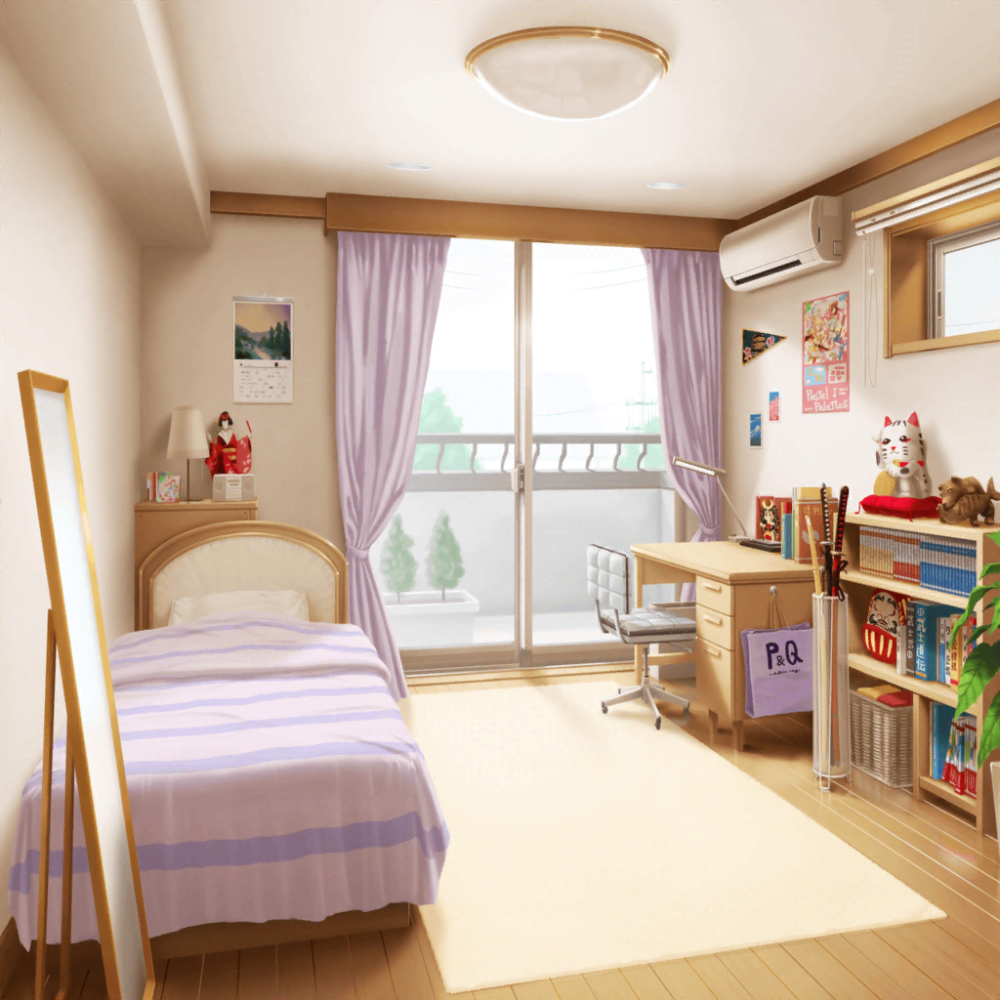

イヴの部屋
イヴ
よし！ 早速日本のおもてなしについて
調べてみましょう！
イヴ
殺陣や弓道は危ないと言われてしまいましたし……
もっと安全な案がないか探してみないと……
イヴ
この図書館で借りてきた本があれば、
きっと何か良いアイディアが思い浮かぶはずです。
まずは、この本から……
イヴ
えっと、なになに……？
おもてなしは、相手を思いやる心をもって
行うこと……？
イヴ
これは、チサトさんやマヤさんが言っていた通りですね。
これぞまさに日本の心です！
イヴ
その心をハンネにも伝えて、ちゃんと謝って……
そして最後はハンネに、日本に来て良かったと、
笑顔になってもらいたいです
イヴ
そのためにも、何かいいアイディアはないでしょうか……？
イヴ
うーん……
あ……折り紙！
イヴ
うん！
とても日本的ですし、プレゼントもできるから
ハンネも喜んでくれそうですね！
イヴ
作るものは……
やっぱり……これですよね！
イヴ
えっと……ここを折って……？
こっちも折る……
そしてハサミで、ここを切って広げると……
イヴ
あれ、なんだか少し違う形になってしまいました……
む、難しいです……
イヴ
もっとトックンして、ハンネに
喜んでもらえるようにがんばりましょう！

翌日
羽沢珈琲店
イヴ
みなさん、今日は集まってもらって、ありがとうございます！
ポピパのみなさんと、ヒマリさんも来てくれたんですね！
香澄
おたえに話を聞いたんだっ！
私達も手伝いたくなっちゃって来ちゃった！
有咲
つーか私はただ……香澄の保護者代わりって感じだから。
けどまぁ、なんか手伝えることがあったら言って
ひまり
イヴちゃーん、がんばろうね～！
つぐに言われて、応援に来たよ～っ♪
イヴ
みなさん……すごく嬉しいです！
千聖
それでイヴちゃん。
どんなパーティにするか、アイディアはまとまった？
イヴ
はい！ 色々考えたのですが……
こんなものを作ってきたので、見てください！
沙綾
えっと……
『ホームパーティ計画書』って書いてあるけど……
ひまり
もしかして、これって……
イヴちゃんが作ったの！？
イヴ
はい！
……なので、今日は少し寝不足です……えへへ
りみ
すごーいっ。
料理から、会場の飾り付けまで、全部まとめられてるね
イヴ
どんなことをやりたいかなど、
みなさんにもちゃんと知ってもらいたいと思ったので……
たえ
あれ？
うさぎのことが書かれてないけど……？
麻弥
たえさん……確かその案は却下されてるはずですけど……
香澄
オッケー！
それじゃあ、ここに書いてあるものを
みんなで準備すればいいんだよね！？
沙綾
これだけ人数がいれば、意外と早く終わりそうだね？
千聖
イヴちゃん、私達がそれぞれ何をすればいいか、
軽く指示を出してもらえると助かるわ
イヴ
わかりました！
そうしたら、まずはこれですね……
よいしょ……っと
花音
……え？ ひょっとして……これって、折り紙？
こ、こんなにどうしたの！？
イヴ
昨日、１人でトックンして、作ったんです！
イヴ
こっちは、折り鶴……
そして、こっちは……桜です！
香澄
わわっ！ すご～い！
よくこんなにたくさん一人で折ったね！？
イヴ
練習をしているうちに、だんだん楽しくなってきて、
気づいたらこんなにたくさん折ってしまいました……
麻弥
この折り紙の鶴と桜で、会場の飾り付けをするんですね！
日本らしいモチーフですし、
きっとハンネさんも喜んでくれますね！
イヴ
昨日１人でたくさん作ったのですが、
飾り付けにはまだ足りないので、
みなさん、手伝ってください
香澄
もっちろん！
よーし、がんばって折り紙しよー！
イヴ
実はこの桜のアイディアは、みんなでお花見に
行ったときのことを思い出して、思いついたんです！
イヴ
あの日は、本当に楽しかったですし、
とっても素敵な景色を見ることができました
イヴ
あの日のことを、どうしてもハンネに伝えたくて！
りみ
……うん！
あの日の桜、本当にキレイだったもんね。
よし、私もがんばるね……！
香澄
有咲〜〜〜！！
なんか鶴のつもりで折ってたのに、
いつの間にかアヒルみたいになっちゃったよ〜！
有咲
首みじかっ！
つーか、全然ちゃんと折れてねーから！
どうしたらそうなるんだよ！？ ……はあ。マジで大丈夫かよ
香澄
うん！
気合いでなんとかっ！
有咲
ムリだろ！？
気合いは万能じゃねーぞっ！
つぐみ
ひまりちゃん、完成した折り紙は
この袋に入れていこうか
ひまり
りょうかーい！
頑張っちゃうぞー！
イヴ
ふふっ……昨日、１人で折り紙のトックンをしている時も、
楽しかったですけど、
みなさんと一緒にやると、もっともっと楽しいですね♪
千聖
なんでもないことでも、こうして友達が一緒なら
楽しく感じられるわよね♪
イヴ
はいっ！
本当にそう思いますっ！
イヴ
みなさんのおかげで素敵なパーティになりそうです！
今から当日が楽しみですっ♪